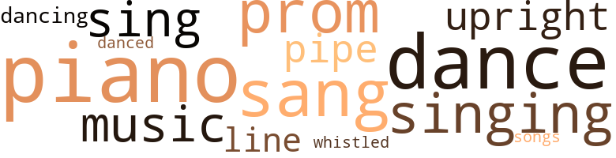

Ice Cream from Heaven, by Skinner, Theodosia B. (1962)
52 music-related terms matched in this text.
Most frequent terms in this topic: piano (8); dance (7); sang (6); prom (5); singing (5)
dance.n.01
Definition: an artistic form of nonverbal communication
| word | sentence |
|---|---|
| dance | I am his aunt , and I 'm wondering if you know . . . . " " He went to Akron after the dance , " said Aunt Martha , try - ing to sound reassuring . |
| dance | " This is really my first dance , Ted , and I 'm not a good dancer . |
| dance | As the music started for the next dance , he came up behind her and asked softly : " Next dance ? " |
| dance | As the music started for the next dance , he came up behind her and asked softly : " Next dance ? " |
| dance | He was an ideal partner for Becky 's first dance . |
| dance | She was really sorry when the dance was over . |
| dance | With great vividness she thought of the dance . |
dance.v.03
Definition: skip, leap, or move up and down or sideways
| word | sentence |
|---|---|
| danced | As Becky stood talking with Ted , her heart fluttered in - stantly , when she noticed that Edmond Frisby was looking at her intently as he danced with another girl . |
| dancing | Becky was dancing up and down on one foot and then the other , her arms covered with goose pimples , her eyes dancing like balls of fire as she tried to understand . |
| dancing | Becky was dancing up and down on one foot and then the other , her arms covered with goose pimples , her eyes dancing like balls of fire as she tried to understand . |
music.n.01
Definition: an artistic form of auditory communication incorporating instrumental or vocal tones in a structured and continuous manner
| word | sentence |
|---|---|
| music | As the music started for the next dance , he came up behind her and asked softly : " Next dance ? " |
| music | During the two hours of music , he was aware of nothing but her presence beside him , while Becky sat filled with delight . |
| music | Meticu - lously , with one finger , she played a piece of Bertha 's music . |
| music | During the music period , they sang two songs . |
piano.n.01
Definition: a keyboard instrument that is played by depressing keys that cause hammers to strike tuned strings and produce sounds
| word | sentence |
|---|---|
| piano | She could n't remember who sang , who played the piano , or anything about the concert . |
| piano | Becky quietly walked to the piano and sat down . |
| piano | Slowly Becky 's hands left the piano and fell back into her lap . |
| piano | Ed sat down on the piano bench and continued talking . |
| piano | She had a piano in her living room . |
| piano | Arm in arm they walked through the house as Bertha told Becky about school ; how to play the radio ; how to use the telephone and play the piano . |
| piano | Becky and Bertha were sitting together on the piano bench , talking and laughing as if they were old friends , when Uncle Larry came in . |
| piano | " Sit here on the piano bench with Bertha while she prac - tices her music lesson . " |
pipe.n.04
Definition: a tubular wind instrument
| word | sentence |
|---|---|
| pipes | She knew about every - thing there : the regular streets , the short cuts to school and church ; the old men sitting on the front porches smoking cigars and pipes , or chewing tobacco ; the one main street downtown where Gram used to take her . |
| pipe | As he and Becky walked he kept his hands deep in his pockets and smoked a pipe . |
| pipe | Uncle Larry returned to his room , sat on the edge of his bed and tried to smoke his pipe . |
promenade.n.01
Definition: a formal ball held for a school class toward the end of the academic year
| word | sentence |
|---|---|
| prom | For her graduation prom Becky purchased the material and made her own dress . |
| prom | For her graduation prom , Bertha was beautifully gowned in white chiffon . |
| prom | As soon as they drove on , Uncle Larry hailed a taxi and he , Aunt Martha and Becky followed them to the prom . |
| prom | Bertha was very popular at the prom , dancing continuously . |
| prom | Even though this is her graduation prom night , we should have in - sisted that she come home in the taxi with us . |
sing.v.02
Definition: produce tones with the voice
| word | sentence |
|---|---|
| sang | Gram continued to hold Becky , and sang to her as she had done when Becky was a tiny baby . |
| sang | She could n't remember who sang , who played the piano , or anything about the concert . |
| sang | During the music period , they sang two songs . |
| sing | Just open your mouth and sing . |
| sang | We sang in the church choir before we married . " |
| sang | Becky sang a solo for Aunt Martha 's club . |
| sang | When Aunt Martha came in they sang Christmas carols - " Silent Night , " " Oh , Come All Ye Faithful , " and " The First Noel , " singing softly so that they would n't disturb their tenants upstairs or the neighbors next door . |
| sing | She was se - lected to sing a solo for her class play . |
| sing | I 'll never try to sing again , never ! " |
| sing | Confidence , warmth and desire to sing had disappeared . |
| singing | Becky 's voice came out loud and clear as she stood singing her solo with her knees shaking . |
singing.n.01
Definition: the act of singing vocal music
| word | sentence |
|---|---|
| singing | " But I like singing very much . |
| singing | Becky and Bertha were soon singing playfully , because Becky did n't know the words . |
| singing | When Aunt Martha came in they sang Christmas carols - " Silent Night , " " Oh , Come All Ye Faithful , " and " The First Noel , " singing softly so that they would n't disturb their tenants upstairs or the neighbors next door . |
| singing | Carl Duval , one of her classmates , admired her singing . |
song.n.01
Definition: a short musical composition with words
| word | sentence |
|---|---|
| songs | During the music period , they sang two songs . |
tune.n.01
Definition: a succession of notes forming a distinctive sequence
| word | sentence |
|---|---|
| line | She smiled broadly as she added the last line : " I 'm glad I took your advice , Gram : Just wait on the Lord . |
| line | " Well , why do they call it a line , if it 's a river ? " asked Becky , very much disappointed . |
upright.n.02
Definition: a piano with a vertical sounding board
| word | sentence |
|---|---|
| upright | Uncle Larry , trying to be calm , slowly turned to look at Becky sitting upright in her bed . |
| upright | Aunt Martha opened her eyes again , sat upright and looked strangely around the room . |
| upright | He returned to his bedroom to find Aunt Martha sitting upright . |
whistle.v.01
Definition: make whistling sounds
| word | sentence |
|---|---|
| whistled | Ed whistled as he walked to his regular street car stop . |
13 violence-related terms matched in this text.
Most frequent terms in this topic: brave (2); choked (1); Violence (1); spite (1); set (1)
anger.n.01
Definition: a strong emotion; a feeling that is oriented toward some real or supposed grievance
| word | sentence |
|---|---|
| anger | He always seemed to talk with his eyes ; he laughed with his eyes and even showed anger with his eyes . |
draw.v.23
Definition: pull (a person) apart with four horses tied to his extremities, so as to execute him
| word | sentence |
|---|---|
| draw | Aunt Martha thought of her childhood days , and how often she had had to draw water from that well . |
envy.n.01
Definition: a feeling of grudging admiration and desire to have something that is possessed by another
| word | sentence |
|---|---|
| envy | " She has an air that creates envy among the other girls by the way she walks across a room . |
fight.v.02
Definition: fight against or resist strongly
| word | sentence |
|---|---|
| fighting | " Yes , Becky , I knew you would , " answered Aunt Martha , fighting back the tears . |
gag.v.06
Definition: cause to retch or choke
| word | sentence |
|---|---|
| choked | After a few moments , Becky stirred to find that the choked - up feeling had left her . |
| choke | The food seemed to stick in her throat , or choke her . |
knife.n.02
Definition: a weapon with a handle and blade with a sharp point
| word | sentence |
|---|---|
| knife | His hand was shaking so much that he almost dropped the knife . |
malice.n.01
Definition: feeling a need to see others suffer
| word | sentence |
|---|---|
| spite | In spite of her whooping cough , Aunt Martha 's illness and Ricky 's whoop - ing cough , she always wrote cheerful letters to Gram . |
sic.v.01
Definition: urge to attack someone
| word | sentence |
|---|---|
| set | She stood , seemingly glued to the floor , her eyes firmly set on the triplets . |
sword.n.01
Definition: a cutting or thrusting weapon that has a long metal blade and a hilt with a hand guard
| word | sentence |
|---|---|
| steel | Cleveland is a great steel center , so it was very easy for Ed to get a job as laborer in a steel mill . |
violence.n.01
Definition: an act of aggression (as one against a person who resists)
| word | sentence |
|---|---|
| Violence | Violence , tenderness and mortal sickness , " his thoughts continued as he waited for the street car . |
weather.v.01
Definition: face and withstand with courage
| word | sentence |
|---|---|
| brave | Her eyes filled with tears , but they were brave tears . |
| brave | Mrs. Jones was completely lost in her own sorrow , but as she listened to Becky she slowly began to forget herself and feel sorry for this lonesome , brave little girl , traveling all alone . |
12 religion-related terms matched in this text.
Most frequent terms in this topic: church (5); heaven (4); Heaven (1); Christ (1); faith (1)
church.n.02
Definition: a place for public (especially Christian) worship
| word | sentence |
|---|---|
| church | Becky stood gazing at her mother , who looked as if she was asleep , and she thought of the many times her mother had taken her to church , to school , or just on long walks . |
| church | Gram said Becky would have to go to the church to see her for the last time and say good-bye . |
| church | She knew about every - thing there : the regular streets , the short cuts to school and church ; the old men sitting on the front porches smoking cigars and pipes , or chewing tobacco ; the one main street downtown where Gram used to take her . |
| church | We sang in the church choir before we married . " |
church.n.04
Definition: the body of people who attend or belong to a particular local church
| word | sentence |
|---|---|
| church | They had planned a small home wedding instead of a large church wedding because they had spent their small savings for a used car and a place to live . |
eden.n.01
Definition: any place of complete bliss and delight and peace
| word | sentence |
|---|---|
| heaven | " Becky , for heaven sake , why should they go to Akron ? " |
| heaven | Just think - my Gram can eat ice cream from heaven next winter . " |
| heaven | Becky , surprised at the way Aunt Martha and Mrs. Domi - nitto stood staring at her , laughingly said : " Why , Aunt Martha , this is ice cream from heaven . |
| Heaven | Suddenly , she had an idea : Having seen Aunt Martha use sugar and vanilla for cakes and puddings , she decided to get some sugar and flavoring for her " Ice Cream from Heaven . " |
| heaven | " For heaven 's sake , Martha . |
messiah.n.01
Definition: any expected deliverer
| word | sentence |
|---|---|
| Christ | Becky ate a good dinner , talking continuously about Christ - mas , the tree and her presents , and as soon as she finished eat - ing she was staring at the tree again . |
religion.n.01
Definition: a strong belief in a supernatural power or powers that control human destiny
| word | sentence |
|---|---|
| faith | I did n't know that I could feel the way I do about you - such closeness , such understand - ing , such faith . |